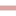

<!doctype html>
<html lang="en">
    <head>
        <meta charset="utf-8">
        <meta http-equiv="X-UA-Compatible" content="IE=edge">
        <meta name="viewport" content="initial-scale=1,user-scalable=no,maximum-scale=1,width=device-width">
        <meta name="mobile-web-app-capable" content="yes">
        <meta name="apple-mobile-web-app-capable" content="yes">
        <link rel="stylesheet" href="css/leaflet.css">
        <link rel="stylesheet" href="css/qgis2web.css"><link rel="stylesheet" href="css/fontawesome-all.min.css">
        <style>
        #map {
            width: 978px;
            height: 748px;
        }
        </style>
        <title></title>
    </head>
    <body>
        <div id="map">
        </div>
        <script src="js/qgis2web_expressions.js"></script>
        <script src="js/leaflet.js"></script>
        <script src="js/leaflet.rotatedMarker.js"></script>
        <script src="js/leaflet.pattern.js"></script>
        <script src="js/leaflet-hash.js"></script>
        <script src="js/Autolinker.min.js"></script>
        <script src="js/rbush.min.js"></script>
        <script src="js/labelgun.min.js"></script>
        <script src="js/labels.js"></script>
        <script src="data/Natura2000Schutzgebiet_1.js"></script>
        <script src="data/Exkursionsroute_2.js"></script>
        <script>
        var map = L.map('map', {
            zoomControl:true, maxZoom:28, minZoom:1
        }).fitBounds([[47.47160376650362,9.519658541110582],[47.51935438852288,9.61134740834166]]);
        var hash = new L.Hash(map);
        map.attributionControl.setPrefix('<a href="https://github.com/tomchadwin/qgis2web" target="_blank">qgis2web</a> &middot; <a href="https://leafletjs.com" title="A JS library for interactive maps">Leaflet</a> &middot; <a href="https://qgis.org">QGIS</a>');
        var autolinker = new Autolinker({truncate: {length: 30, location: 'smart'}});
        var bounds_group = new L.featureGroup([]);
        function setBounds() {
        }
        map.createPane('pane_OpenStreetMap_0');
        map.getPane('pane_OpenStreetMap_0').style.zIndex = 400;
        var layer_OpenStreetMap_0 = L.tileLayer('https://tile.openstreetmap.org/{z}/{x}/{y}.png', {
            pane: 'pane_OpenStreetMap_0',
            opacity: 1.0,
            attribution: '',
            minZoom: 1,
            maxZoom: 28,
            minNativeZoom: 0,
            maxNativeZoom: 19
        });
        layer_OpenStreetMap_0;
        map.addLayer(layer_OpenStreetMap_0);
        function pop_Natura2000Schutzgebiet_1(feature, layer) {
            var popupContent = '<table>\
                    <tr>\
                        <td colspan="2">' + (feature.properties['bundesland'] !== null ? autolinker.link(feature.properties['bundesland'].toLocaleString()) : '') + '</td>\
                    </tr>\
                    <tr>\
                        <td colspan="2">' + (feature.properties['name'] !== null ? autolinker.link(feature.properties['name'].toLocaleString()) : '') + '</td>\
                    </tr>\
                    <tr>\
                        <td colspan="2">' + (feature.properties['typ'] !== null ? autolinker.link(feature.properties['typ'].toLocaleString()) : '') + '</td>\
                    </tr>\
                    <tr>\
                        <td colspan="2">' + (feature.properties['eu_code'] !== null ? autolinker.link(feature.properties['eu_code'].toLocaleString()) : '') + '</td>\
                    </tr>\
                    <tr>\
                        <td colspan="2">' + (feature.properties['datum'] !== null ? autolinker.link(feature.properties['datum'].toLocaleString()) : '') + '</td>\
                    </tr>\
                    <tr>\
                        <td colspan="2">' + (feature.properties['erf_mas'] !== null ? autolinker.link(feature.properties['erf_mas'].toLocaleString()) : '') + '</td>\
                    </tr>\
                    <tr>\
                        <td colspan="2">' + (feature.properties['geo_lang'] !== null ? autolinker.link(feature.properties['geo_lang'].toLocaleString()) : '') + '</td>\
                    </tr>\
                    <tr>\
                        <td colspan="2">' + (feature.properties['geo_breit'] !== null ? autolinker.link(feature.properties['geo_breit'].toLocaleString()) : '') + '</td>\
                    </tr>\
                    <tr>\
                        <td colspan="2">' + (feature.properties['area'] !== null ? autolinker.link(feature.properties['area'].toLocaleString()) : '') + '</td>\
                    </tr>\
                    <tr>\
                        <td colspan="2">' + (feature.properties['hektar'] !== null ? autolinker.link(feature.properties['hektar'].toLocaleString()) : '') + '</td>\
                    </tr>\
                    <tr>\
                        <td colspan="2">' + (feature.properties['eu_typ'] !== null ? autolinker.link(feature.properties['eu_typ'].toLocaleString()) : '') + '</td>\
                    </tr>\
                    <tr>\
                        <td colspan="2">' + (feature.properties['uuid'] !== null ? autolinker.link(feature.properties['uuid'].toLocaleString()) : '') + '</td>\
                    </tr>\
                    <tr>\
                        <td colspan="2">' + (feature.properties['anps'] !== null ? autolinker.link(feature.properties['anps'].toLocaleString()) : '') + '</td>\
                    </tr>\
                    <tr>\
                        <td colspan="2">' + (feature.properties['iucn'] !== null ? autolinker.link(feature.properties['iucn'].toLocaleString()) : '') + '</td>\
                    </tr>\
                    <tr>\
                        <td colspan="2">' + (feature.properties['verordnung'] !== null ? autolinker.link(feature.properties['verordnung'].toLocaleString()) : '') + '</td>\
                    </tr>\
                    <tr>\
                        <td colspan="2">' + (feature.properties['ris_link'] !== null ? autolinker.link(feature.properties['ris_link'].toLocaleString()) : '') + '</td>\
                    </tr>\
                    <tr>\
                        <td colspan="2">' + (feature.properties['lgbl'] !== null ? autolinker.link(feature.properties['lgbl'].toLocaleString()) : '') + '</td>\
                    </tr>\
                </table>';
            layer.bindPopup(popupContent, {maxHeight: 400});
        }

        function style_Natura2000Schutzgebiet_1_0() {
            return {
                pane: 'pane_Natura2000Schutzgebiet_1',
                opacity: 1,
                color: 'rgba(29,149,51,1.0)',
                dashArray: '',
                lineCap: 'butt',
                lineJoin: 'miter',
                weight: 1.0, 
                fill: true,
                fillOpacity: 1,
                fillColor: 'rgba(133,182,111,0.25098039215686274)',
                interactive: true,
            }
        }
        map.createPane('pane_Natura2000Schutzgebiet_1');
        map.getPane('pane_Natura2000Schutzgebiet_1').style.zIndex = 401;
        map.getPane('pane_Natura2000Schutzgebiet_1').style['mix-blend-mode'] = 'normal';
        var layer_Natura2000Schutzgebiet_1 = new L.geoJson(json_Natura2000Schutzgebiet_1, {
            attribution: '',
            interactive: true,
            dataVar: 'json_Natura2000Schutzgebiet_1',
            layerName: 'layer_Natura2000Schutzgebiet_1',
            pane: 'pane_Natura2000Schutzgebiet_1',
            onEachFeature: pop_Natura2000Schutzgebiet_1,
            style: style_Natura2000Schutzgebiet_1_0,
        });
        bounds_group.addLayer(layer_Natura2000Schutzgebiet_1);
        map.addLayer(layer_Natura2000Schutzgebiet_1);
        function pop_Exkursionsroute_2(feature, layer) {
            var popupContent = '<table>\
                    <tr>\
                        <td colspan="2">' + (feature.properties['id'] !== null ? autolinker.link(feature.properties['id'].toLocaleString()) : '') + '</td>\
                    </tr>\
                </table>';
            layer.bindPopup(popupContent, {maxHeight: 400});
        }

        function style_Exkursionsroute_2_0() {
            return {
                pane: 'pane_Exkursionsroute_2',
                opacity: 1,
                color: 'rgba(195,110,107,0.6274509803921569)',
                dashArray: '10,5',
                lineCap: 'square',
                lineJoin: 'bevel',
                weight: 3.0,
                fillOpacity: 0,
                interactive: true,
            }
        }
        map.createPane('pane_Exkursionsroute_2');
        map.getPane('pane_Exkursionsroute_2').style.zIndex = 402;
        map.getPane('pane_Exkursionsroute_2').style['mix-blend-mode'] = 'normal';
        var layer_Exkursionsroute_2 = new L.geoJson(json_Exkursionsroute_2, {
            attribution: '',
            interactive: true,
            dataVar: 'json_Exkursionsroute_2',
            layerName: 'layer_Exkursionsroute_2',
            pane: 'pane_Exkursionsroute_2',
            onEachFeature: pop_Exkursionsroute_2,
            style: style_Exkursionsroute_2_0,
        });
        bounds_group.addLayer(layer_Exkursionsroute_2);
        map.addLayer(layer_Exkursionsroute_2);
        var baseMaps = {};
        L.control.layers(baseMaps,{' Exkursionsroute': layer_Exkursionsroute_2,' Natura2000-Schutzgebiet': layer_Natura2000Schutzgebiet_1,"OpenStreetMap": layer_OpenStreetMap_0,}).addTo(map);
        setBounds();
        var i = 0;
        layer_Natura2000Schutzgebiet_1.eachLayer(function(layer) {
            var context = {
                feature: layer.feature,
                variables: {}
            };
            layer.bindTooltip((layer.feature.properties['name'] !== null?String('<div style="color: #40692d; font-size: 13pt; font-weight: bold; font-family: \'MS Shell Dlg 2\', sans-serif;">' + layer.feature.properties['name']) + '</div>':''), {permanent: true, offset: [-0, -16], className: 'css_Natura2000Schutzgebiet_1'});
            labels.push(layer);
            totalMarkers += 1;
              layer.added = true;
              addLabel(layer, i);
              i++;
        });
        resetLabels([layer_Natura2000Schutzgebiet_1]);
        map.on("zoomend", function(){
            resetLabels([layer_Natura2000Schutzgebiet_1]);
        });
        map.on("layeradd", function(){
            resetLabels([layer_Natura2000Schutzgebiet_1]);
        });
        map.on("layerremove", function(){
            resetLabels([layer_Natura2000Schutzgebiet_1]);
        });
        </script>
    </body>
</html>
